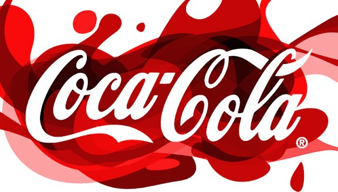
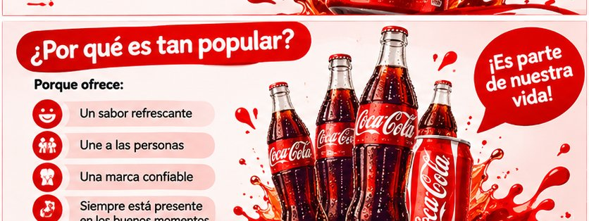
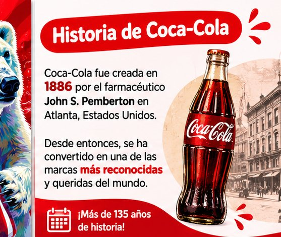
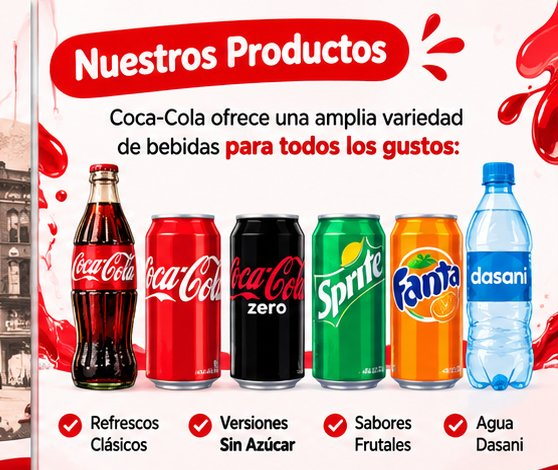
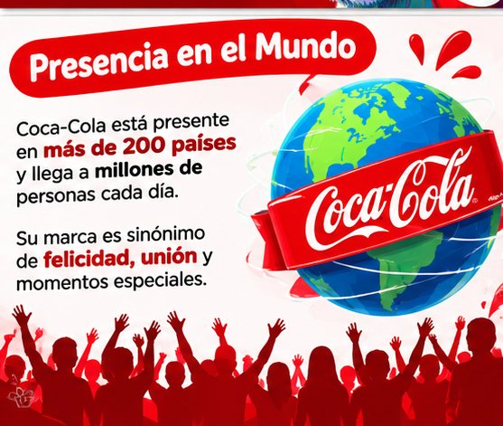
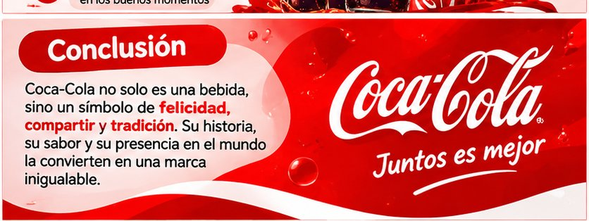

Epílogo: Coca‑Cola vs. Inca Kola
La rivalidad peruana que terminó transformándose en una alianza. Haz clic para entrar y conocer a la Inca Kola y su historia.
Entrar a Inca Kola →Una marca, una historia y millones de momentos compartidos
¿Por qué una gaseosa es más que una bebida?
Presentación para público general
Conoce a Inca Kola
Una bebida que se convirtió en un símbolo cultural
Su botella con curvas y su logo rojo y blanco se reconocen casi en cualquier lugar del mundo.
Desde hace décadas se asocia con compartir, celebrar y reunirse en momentos de todos los días.
Se vende en más de 200 países y territorios, y es un referente de las bebidas.

De una creación local a una marca reconocida internacionalmente

La marca forma parte de un portafolio amplio
La versión emblemática de la marca.
Alternativas para quienes prefieren reducir o evitar el azúcar.
Bebidas de otros sabores y categorías del portafolio.
Agua y otras opciones para distintas ocasiones.
Idea clave: la variedad permite adaptar la oferta a distintos gustos, momentos y preferencias.

Una marca que busca estar presente en diferentes culturas y comunidades

La comunicación de Coca‑Cola se apoya en ideas universales: compartir, celebrar, disfrutar y conectar con otras personas.
Las campañas suelen mostrar encuentros y experiencias compartidas.
La marca adapta su comunicación a distintos mercados y contextos.
Construir recuerdos y asociaciones emocionales alrededor de la marca.
¿Qué marca te recuerda a tus momentos compartidos?
Gracias por su atención

La rivalidad peruana que terminó transformándose en una alianza. Haz clic para entrar y conocer a la Inca Kola y su historia.
Entrar a Inca Kola →